ROS (Robot Operating System) Course

Docs : Installation Guide
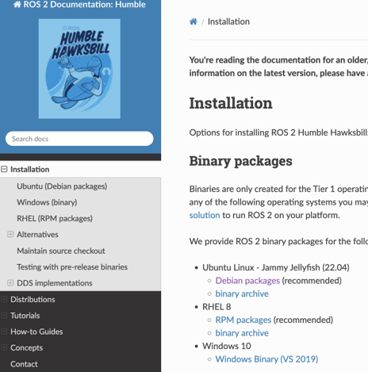Ubuntu
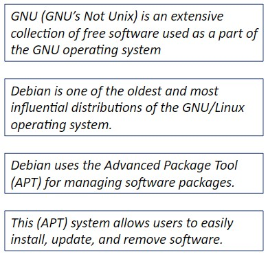Ubuntu is a popular distribution (or "distro") of Linux
Ubuntu is based on the GNU/Linux OS and combines the Linux kernel with a set of GNU utilities and libraries.
The Linux kernel is responsible for managing hardware, running processes, and handling system resources.
Ubuntu is built on the Debian distribution of Linux. Debian was first announced by Ian Murdock in 1993.
Ubuntu takes the core components of Debian and adds its own enhancements, software, and user interface improvements.
Ubuntu is developed and maintained by Canonical Ltd.
Ubuntu is open source and has a large and active community.
Download
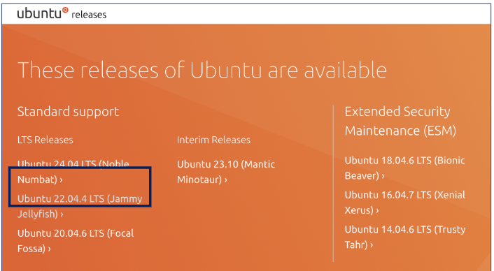 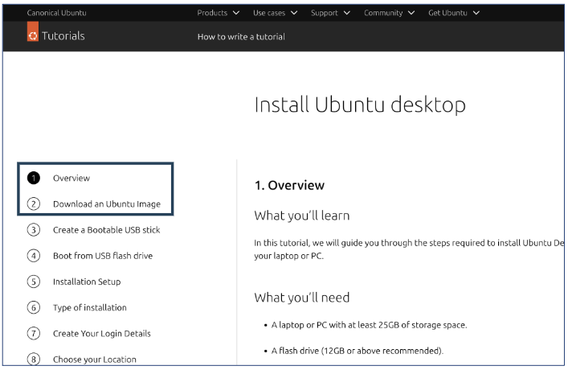https://ubuntu.com/tutorials/install-ubuntu-desktop#1-overview
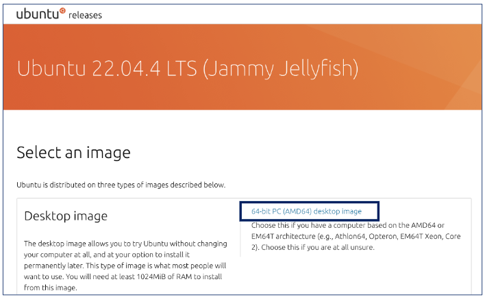Bootable Drive
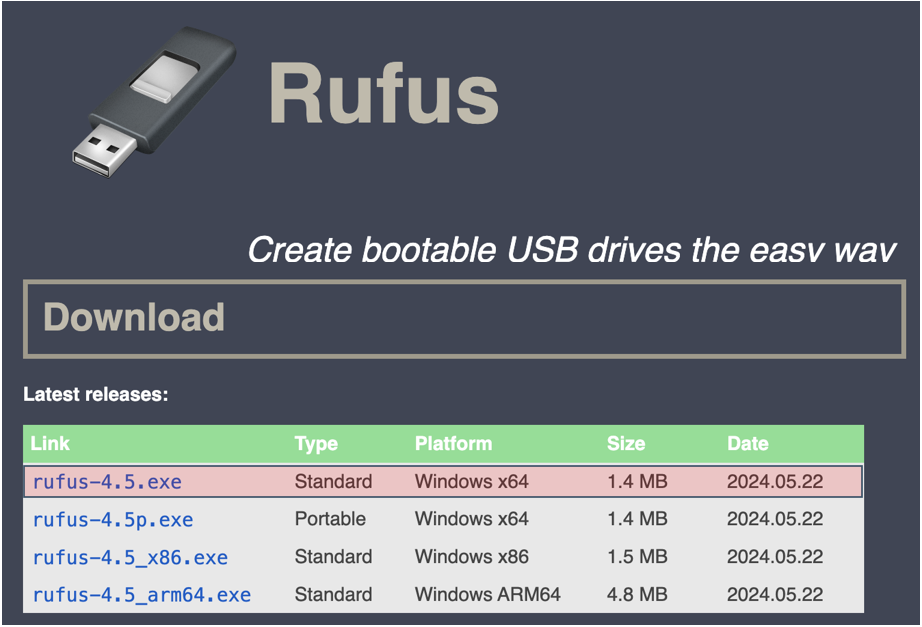 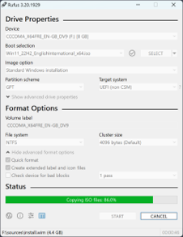 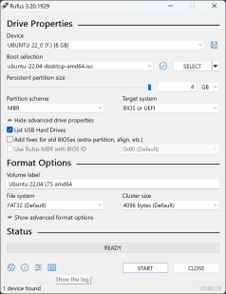 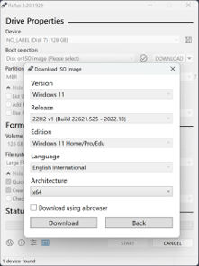 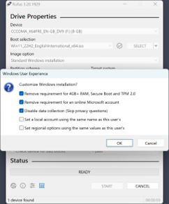
Creating Virtual Machine
 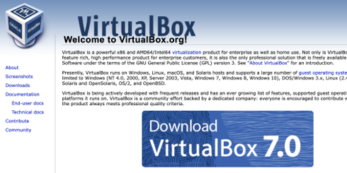
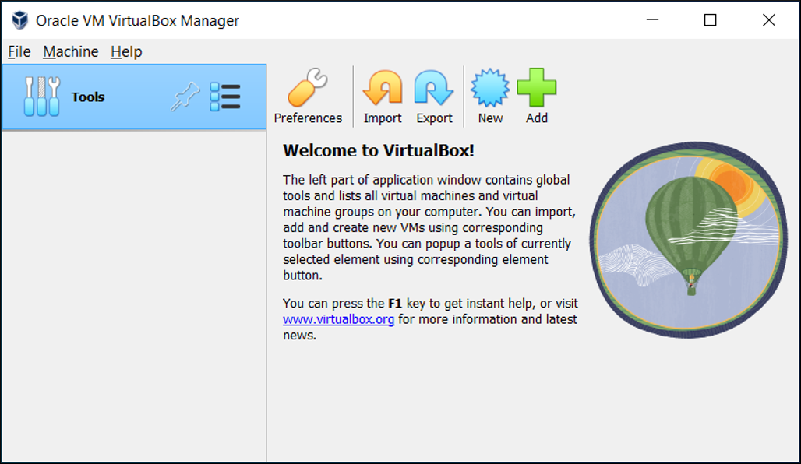
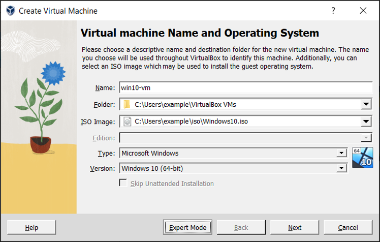
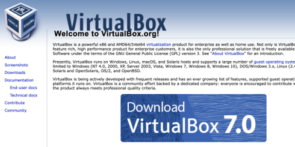
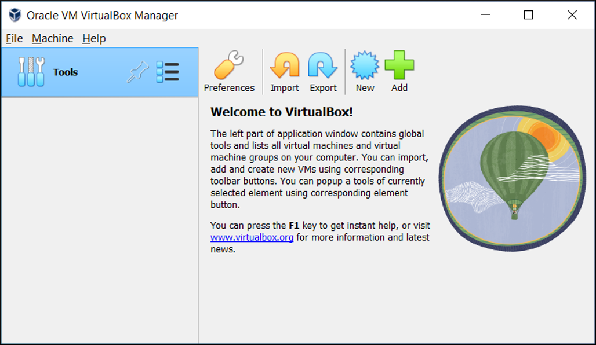
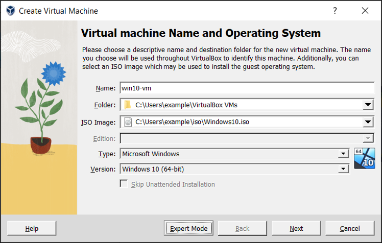
Name: Assign an informative name that describes the OS and software running on the VM. For example, a name such as "Ubuntu22.04-ROS".
Folder: The location where VMs are stored on your computer, called the machine folder.
ISO Image: Select an ISO image file. The image file should be downloaded before creating New VM.
Type and Version: These fields are used to select the OS that you want to install on the new virtual machine.
If an ISO image is selected and Oracle VM VirtualBox detects the operating system for the ISO, the Type and Version fields are populated automatically and are disabled.
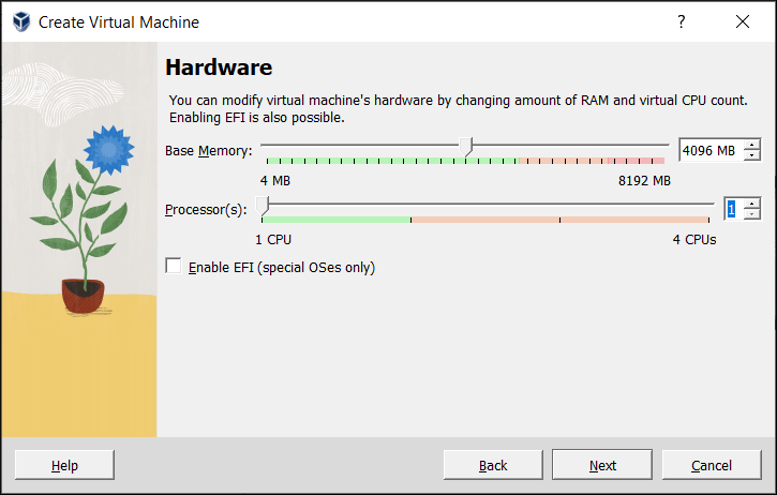Base Memory: The amount of memory selected here will be taken away from your host machine.
The memory you give to the VM will not be available to your host OS while the VM is running.
You can change this setting later, after you have created the VM.
Processor(s): Select the number of virtual processors to assign to the VM.
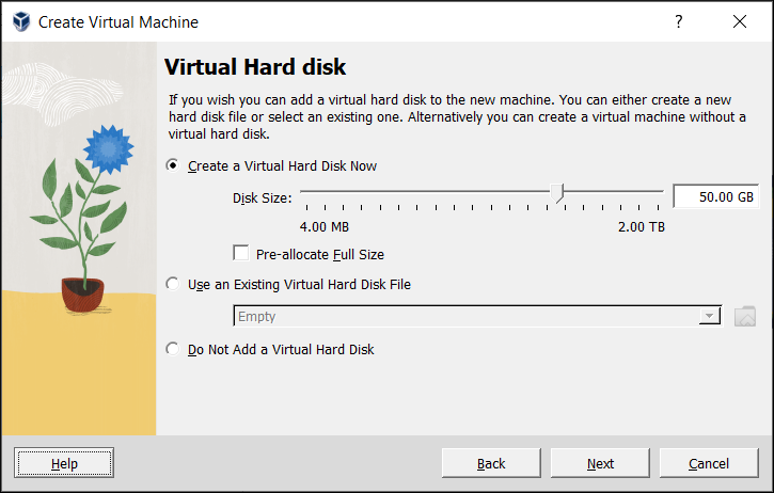Disk Size: maximum size for the hard disk in the new VM
Pre-Allocate Full Size: Select to opt a fixed-size file for the disk image. Deselect to opt a dynamically allocated file for the disk image.
Dynamically allocated file: Image file only grows when we store data on its virtual hard disk. So, it is initially small and grows with as per use.
Fixed-size file: This type of image file immediately occupies the file specified. While occupying much more space, it is slightly faster than a dynamically allocated file.
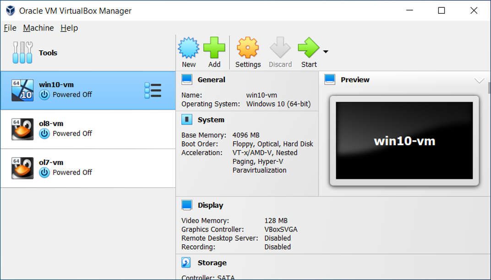 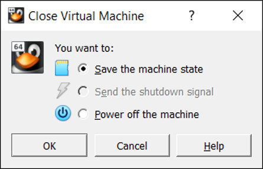Save the machine state: VirtualBox freezes the virtual machine by completely saving its state to your local disk. All the programs are open and resumes operation once restarted.
Send the shutdown signal: This has the same effect as of pressing the power button on a computer. This will trigger a shutdown mechanism from within the VM.
Power off the machine: With this option, Oracle VM VirtualBox also stops running the virtual machine, but without saving its state.
Command : sudo
The sudo command in Linux and other Unix-like operating systems stands for "superuser do."
sudo apt updatesudo apt upgradesudo apt install build-essential gcc make perl dkmsbuild-essential: This package includes a collection of tools for building software.
gcc: The GNU Compiler Collection supporting various programming languages.
make: A build automation tool that automatically builds executable programs and libraries from source code by reading files called Makefiles.
perl: A high-level, general-purpose, interpreted programming language often used for system administration, web development, and network programming.
dkms: Dynamic Kernel Module Support, a framework that allows kernel modules to be dynamically built for each kernel version installed on a system.
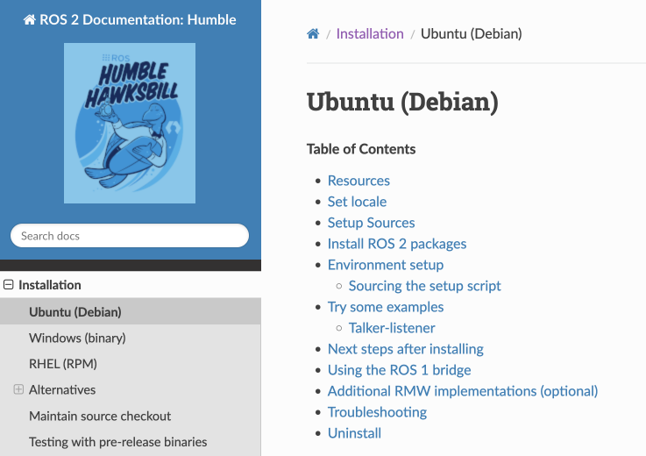 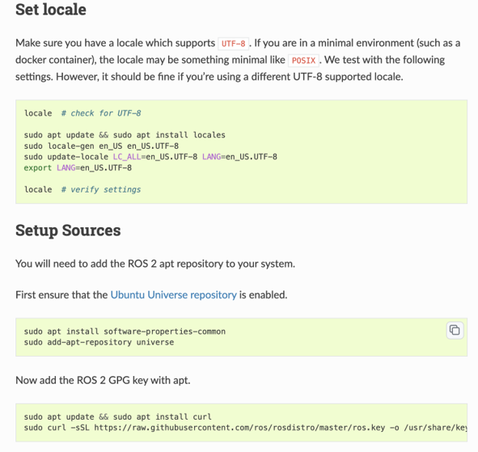 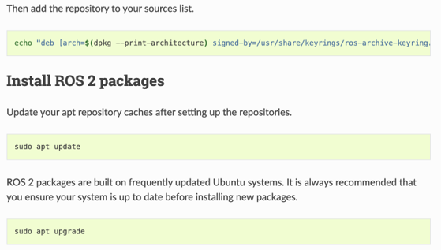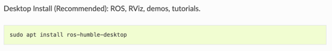
Thank You. End of Installation of ROS